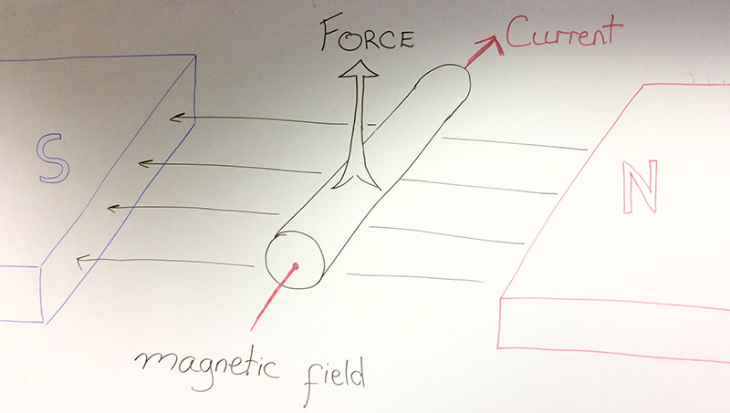
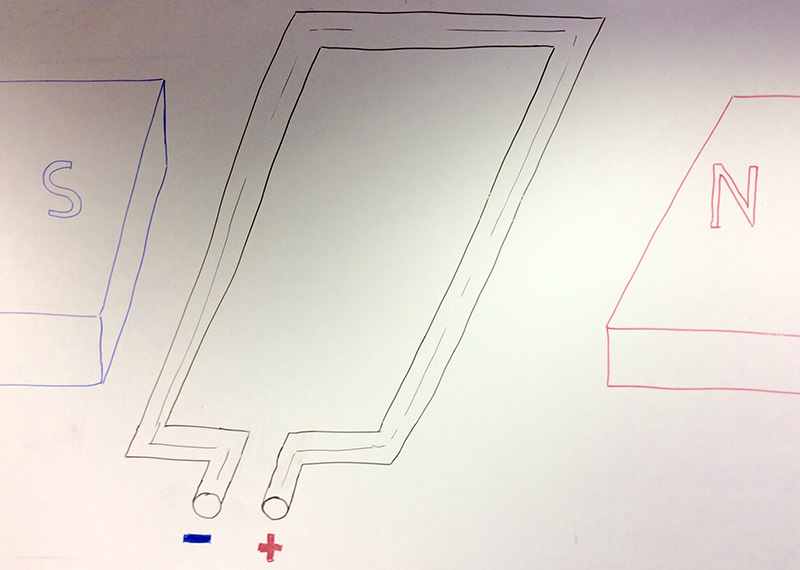

The Delport Flyer
1 Motors
Learn It
- There are many different forms of energy.
- When you pick up a ball, you give it what is known as Gravitational Potential Energy.
- When you drop it, the Gravitational Potential Energy is converted to Kinetic Energy (movement). In other words, the ball falls.
- Other types of energy are:
- Electrical Energy
- Nuclear Energy
- Thermal Energy (Heat)
- Light Energy
- Chemical Energy (Fuel)
- Elastic Potential Energy.
- Sound Energy
Learn It
- Certain devices can convert one form of energy to another.
- A solar panel can convert light energy to electrical energy.
- A wind turbine converts kinetic energy to electrical energy.
- A fire converts chemical energy to light and heat energy.
- In this project you can use a motor. An eclectic motor can convert electrical energy to kinetic energy.
Badge It - Silver
- Describe the energy conversions that happen in the following systems. Use the web to help you.
- A Battery
- An LED
- A Buzzer
- A Dynamo
- A Television.
Learn It
- An electric motor converts, electrical energy into kinetic energy.
- It achieves this by the use of magnets.
- Look at the diagram below.

- When an electric current passes through a wire, that is inside a magnetic filed, the wire experiences a force that will move it.
- In the diagram above:
- the direction of the magnetic field is from right to left (always N to S).
- the direction of the current is going into the screen.
- the force on the wire is upwards.
Badge It - Gold
- If the magnetic field direction is switched, or the direction of current is switched, the force on the wire will also be switched.
- Download the image below and then annotate it to show:
- the direction of the magnetic field.
- the direction of the current (remember that current flows from positive to negative)
- The direction of the force(s) on the wire.

Learn It
- The opposing forces on a loop of current carrying wire, in a magnetic field, cause the loop to want to turn.
- If we increase the number of loops, so that we have a coil of wire, we can increase the force and so make the coils turn even faster.
- Look at the diagram below. The magnets are almost semi-circles, and there are many coils of wire.

- A set up look this is what is contained in normal electric motors. By attaching the coils of wire to an axle, we can make the axle spin.
Research It
- The type of motor shown in the image above, is a brushed DC motor.
- Use the web to find out what is meant by
DC. - Use the web to find out what
brushesin electric motors are for.
Badge It - Platinum
- Write up a short summary of how
brusheswork to allow an almost continuous flow of current through the wire coil, inside an electric motor. - Make sure you include at least one diagram, to help with your explanation.